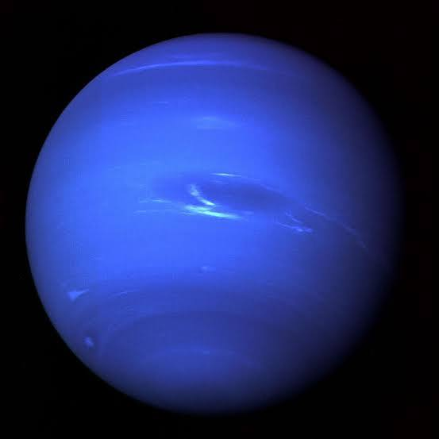
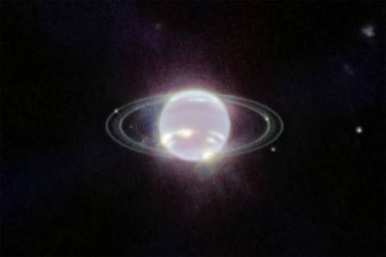

Neptune is the eighth and most distant planet in our solar system. Dark, cold, and whipped by supersonic winds, ice giant Neptune is more than 30 times as far from the Sun as Earth. Neptune is the only planet in our solar system not visible to the naked eye. In 2011 Neptune completed its first 165-year orbit since its discovery in 1846. Neptune is so far from the Sun that high noon on the big blue planet would seem like dim twilight to us. The warm light we see here on our home planet is roughly 900 times as bright as sunlight on Neptune.


With an equatorial diameter of 30,775 miles (49,528 kilometers), Neptune is about four times wider than Earth. If Earth were the size of a nickel, Neptune would be about as big as a baseball. From an average distance of 2.8 billion miles (4.5 billion kilometers), Neptune is 30 astronomical units away from the Sun. One astronomical unit (abbreviated as AU), is the distance from the Sun to Earth. From this distance, it takes sunlight 4 hours to travel from the Sun to Neptune.
One day on Neptune takes about 16 hours (the time it takes for Neptune to rotate or spin once). And Neptune makes a complete orbit around the Sun (a year in Neptunian time) in about 165 Earth years (60,190 Earth days). Sometimes Neptune is even farther from the Sun than dwarf planet Pluto. Pluto's highly eccentric, oval-shaped orbit brings it inside Neptune's orbit for a 20-year period every 248 Earth years. This switch, in which Pluto is closer to the Sun than Neptune, happened most recently from 1979 to 1999. Pluto can never crash into Neptune, though, because for every three laps Neptune takes around the Sun, Pluto makes two. This repeating pattern prevents close approaches of the two bodies. Neptune’s axis of rotation is tilted 28 degrees with respect to the plane of its orbit around the Sun, which is similar to the axial tilts of Mars and Earth. This means that Neptune experiences seasons just like we do on Earth; however, since its year is so long, each of the four seasons lasts for over 40 years.
Neptune has at least five main rings and four prominent ring arcs that we know of so far. Starting near the planet and moving outward, the main rings are named Galle, Leverrier, Lassell, Arago, and Adams. The rings are thought to be relatively young and short-lived. Neptune's ring system also has peculiar clumps of dust called arcs. Four prominent arcs named Liberté (Liberty), Egalité (Equality), Fraternité (Fraternity), and Courage are in the outermost ring, Adams. The arcs are strange because the laws of motion would predict that they would spread out evenly rather than stay clumped together. Scientists now think the gravitational effects of Galatea, a moon just inward from the ring, stabilizes these arcs.
Neptune took shape when the rest of the solar system formed about 4.5 billion years ago when gravity pulled swirling gas and dust in to become this ice giant. Like its neighbor Uranus, Neptune likely formed closer to the Sun and moved to the outer solar system about 4 billion years ago.
Neptune is one of two ice giants in the outer solar system (the other is Uranus). Most (80% or more) of the planet's mass is made up of a hot dense fluid of "icy" materials – water, methane, and ammonia – above a small, rocky core. Of the giant planets, Neptune is the densest. Scientists think there might be an ocean of super hot water under Neptune's cold clouds. It does not boil away because incredibly high pressure keeps it locked inside.
Neptune does not have a solid surface. Its atmosphere (made up mostly of hydrogen, helium, and methane) extends to great depths, gradually merging into water and other melted ices over a heavier, solid core with about the same mass as Earth.
Neptune's atmosphere is made up mostly of hydrogen and helium with just a little bit of methane. Neptune's neighbor Uranus has a similar makeup; the methane absorbs other colors but reflects blue, giving these ice giants their similar hue. Many images of Neptune, coming from the Voyager 2 flyby in 1989, show Neptune as a much deeper blue. This was because the Voyager team tweaked the images, to better reveal clouds and other distinctive features on the planet, compared to the hazy, uniform view of Uranus that Voyager 2 had captured in 1986. Researchers in 2024 re-processed the images, showing the planets look much more alike than many thought. Neptune is our solar system's windiest world. Despite its great distance and low energy input from the Sun, Neptune's winds can be three times stronger than Jupiter's and nine times stronger than Earth's. These winds whip clouds of frozen methane across the planet at speeds of more than 1,200 miles per hour (2,000 kilometers per hour). Even Earth's most powerful winds hit only about 250 miles per hour (400 kilometers per hour). In 1989 a large, oval-shaped storm in Neptune's southern hemisphere dubbed the "Great Dark Spot" was large enough to contain the entire Earth. That storm has since disappeared, but new ones have appeared on different parts of the planet.
The main axis of Neptune's magnetic field is tipped over by about 47 degrees compared with the planet's rotation axis. Like Uranus, whose magnetic axis is tilted about 60 degrees from the axis of rotation, Neptune's magnetosphere undergoes wild variations during each rotation because of this misalignment. The magnetic field of Neptune is about 27 times more powerful than that of Earth.
Credit: https://science.nasa.gov/neptune/facts/